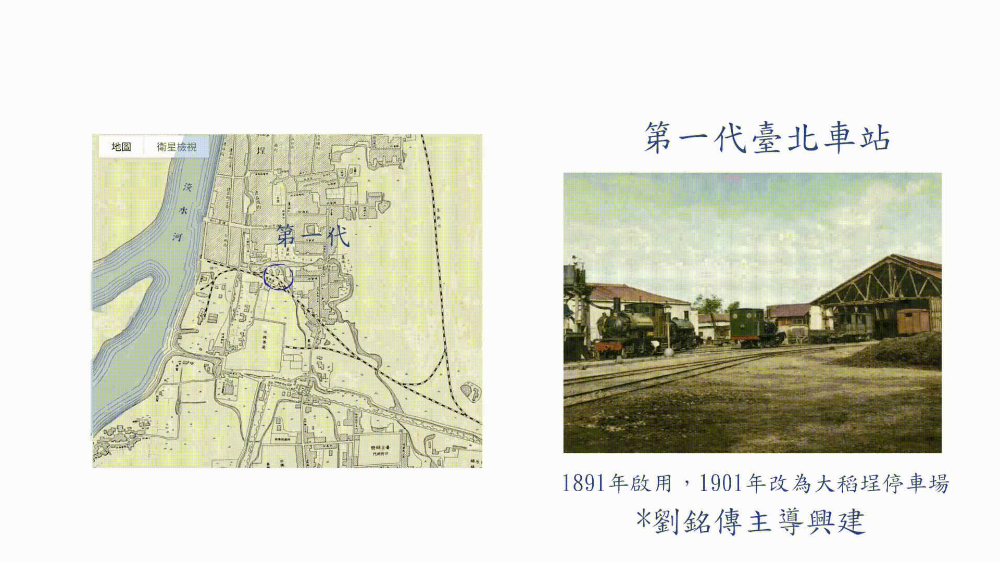

臺北車站共有第四代，每一代地址和建築風格都不同。
第一代車站於1891年設立，由清代劉銘傳主導興建。位於大稻埕河溝頭街附近，當時被稱為臺北火車碼頭，建築採歐式棚式風格。許多物產貿易因此而興起，大稻埕繼艋舺之後成為重要的貿易據點，使臺灣經濟重心北移。
第二代車站位於今臺北車站西側正對館前路一帶，屬於日治時期臺北最早期的磚石造西洋風格建築，當時經費有限，採取縮小車站規模，將經費用於延長鐵道路線的政策。建築面積不過一百八十坪。
第三代車站於第二代車站附近，因臺北車站流量在臺北博覽會期間出入人口大幅上升，車站於1938到1940年間改建，佔地面積擴充至一千兩百坪，站內設置許多像是郵局餐廳等內部設施，成為一座多功能的現代車站。
第四代車站是我們現在的車站，1985年動工於第三代車站東側興建新站，並將舊站拆除。